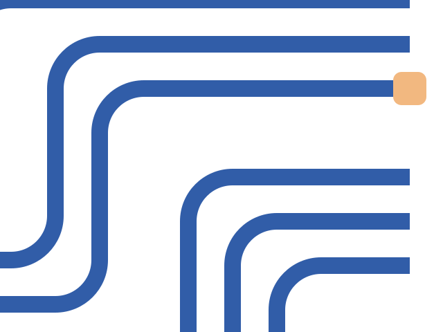
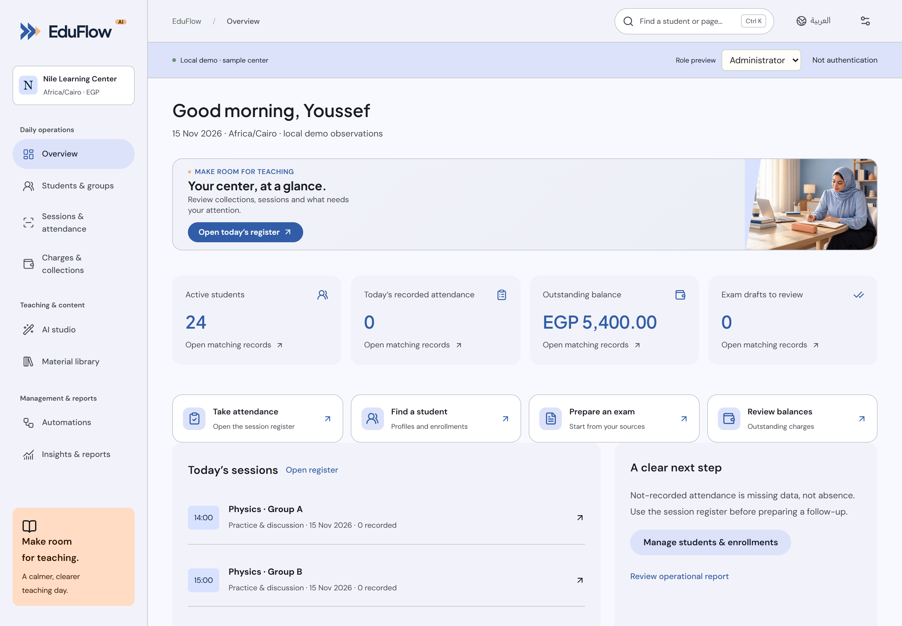

واضح
المعلومة الأساسية قدامك، والخطوة الجاية مفهومة.
دليل الهوية، من الشعار لواجهة المنتج.
نظام بصري واحد يربط الأزرق الواضح بلمسة مشمشيّة دافئة، ويترك المساحة الأكبر للتعليم.
ابدأ بالفكرةMake room for teaching.

ORDER → FLOW → FOCUSمساحة للتعليم.
A clearer day.IBM Plex Sans Arabic × Plus Jakarta SansEduFlow AI يجمع إدارة السنتر وتجهيز المحتوى والمتابعة في مساحة عمل واحدة، علشان يبقى عند المدرّس وقت وتركيز أكبر للتعليم.
المعلومة الأساسية قدامك، والخطوة الجاية مفهومة.
الأرقام لها مصدر، والمسودات واضحة قبل الاعتماد.
لغة مفهومة وصور طبيعية تشبه اليوم التعليمي.
الاسم ثابت للديمو باتفاق التيم. الهوية مستقلة عن منصة Eduflow الموجودة على eduflow.com.
الشعار المعتمد: صفحات متتابعة تتحوّل لسهمين، وطرف مشمشي يميّز الخطوة التالية. نفس تصميم الفكرة ٥، مرسوم بمسارات SVG أصلية ليظل واضحًا بأي حجم.
مساحة الأمان ربع عرض العلامة من كل ناحية.
أصغر حجم العلامة 24px، واللوجو الكامل 144px.
الاتجاه اللوجو ثابت LTR حتى في الواجهة العربية.
الخلفيات والمساحات الهادية هي الغالب. الأزرق يوجّه الإجراء الأساسي، والمشمشي يضيف دفء في التفاصيل.
#315DA8#F2B880#14243B#F8F9FFكل حالة لها نص واضح. المشمشي خلفية للكتابة الداكنة، وليس لون كتابة على الأبيض.
IBM Plex Sans Arabic للعربية، وDM Sans للنص الإنجليزي، وPlus Jakarta Sans للعناوين واللوجو. الخطوط محلية وتشتغل بدون Google Fonts.
يوم تعليمي
أهدى وأوضح.
الحضور، التحصيلات، وتجهيز الحصص.
كل خطوة واضحة وفي مكانها.
Make room
for teaching.
One workspace for your center,
your content, and your next step.
اختار شاشة وشوف لقطة فعلية من الديمو، أو افتح الموقع وجرّب البحث والتجهيز بنفسك.

نفس الشخصية في واجهة المنتج، وعرض المشروع، والمحتوى اللي بنشاركه.
Center operations. Teaching preparation. One flow.
نتكلم ببساطة واحترام، ونقول للمستخدم إيه حصل وإيه الخطوة الجاية. نوضّح إن ناتج الـAI مسودة لما يحتاج مراجعة.
تم حفظ الحضور.
لو فيه مشكلةتعذّر الحفظ. بياناتك لسه موجودة، جرّب تاني.
لما المحتوى يحتاج مراجعةالمسودة جاهزة. راجع الأسئلة قبل الاعتماد.